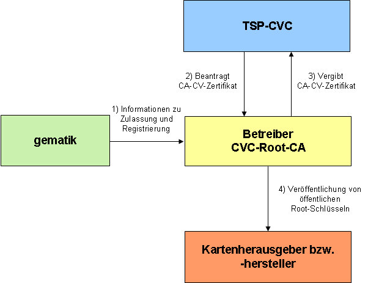

Elektronische Gesundheitskarte und Telematikinfrastruktur
Spezifikation
CVC-Root
| Version | 1.9.0 |
| Revision | 571861 |
| Stand | 18.12.2018 |
| Status | freigegeben |
| Klassifizierung | öffentlich |
| Referenzierung | gemSpec_CVC_Root |
Änderungen zur Vorversion
Einarbeitung der Änderungsliste P17.1.
Dokumentenhistorie
| Version |
Stand |
Kap./ Seite |
Grund der Änderung, besondere Hinweise |
Bearbeitung |
|---|---|---|---|---|
| 0.1.0 |
31.10.12 |
Anlegen des Dokuments |
Basis-TI Stufe 1 / PKI |
|
| 0.1.1 |
15.11.12 |
Anpassung nach PKI-interner QS und Kommentierung durch PL und AM |
Basis-TI Stufe 1 / PKI |
|
| 1.0.0 |
07.12.12 |
Einarbeitung Gesellschafterkommentare |
gematik |
|
| 1.1.0 |
06.06.13 |
Überarbeitung anhand interner Änderungsliste (Fehlerkorrekturen, Inkonsistenzen) |
gematik |
|
| 1.2.0 |
02.09.13 |
Einarbeitung lt. Änderungsliste vom 08.08.2013 |
gematik |
|
| 1.3.0 |
18.12.13 |
Einarbeitung lt. Änderungsliste |
gematik |
|
| 1.4.0 |
21.02.14 |
Losübergreifende Synchronisation |
gematik |
|
| 1.5.0 |
17.06.14 |
Anpassung OID „rsaEncryption“ gemäß P11-Änderungsliste |
gematik |
|
| 1.6.0 |
26.08.14 |
Regelungen zum CVC-Root-Wechsel ergänzt |
gematik |
|
| 1.7.0 |
24.08.16 |
Anpassungen zum Online-Produktivbetrieb (Stufe 1) |
gematik |
|
| 1.7.1 |
16.10.16 |
A1 | Aufnahme SMC-B für Organisationen der Gesellschafter |
|
| 1.7.2 |
21.04.17 |
Einarbeitung P14.9 |
gematik |
|
| 1.8.0 | 07.05.18 | Einarbeitung P15.4 |
gematik |
|
| 1.9.0 | 18.12.18 | Einarbeitung P17.1 | gematik |
Die vorliegende Spezifikation definiert die Anforderungen an den Produkttyp CVC-Root. Sie stellt Anforderungen hinsichtlich Konzeption und Betrieb der CVC-Root-CA im Umfeld der Kartengeneration G2. Es werden übergreifende Festlegungen beschrieben sowie Anforderungen an die organisatorische Schnittstelle zum Erhalt eines CVC-CA-Zertifikates gestellt.
Das Dokument richtet sich an Anbieter einer CVC-Root-CA und an Trust Service Provider CVC.
Dieses Dokument enthält normative Festlegungen zur Telematikinfrastruktur des deutschen Gesundheitswesens. Der Gültigkeitszeitraum der vorliegenden Version und deren Anwendung in Zulassungsverfahren wird durch die gematik GmbH in gesonderten Dokumenten (z. B. Dokumentenlandkarte, Produkttypsteckbrief, Leistungsbeschreibung) festgelegt und bekannt gegeben.
Schutzrechts-/Patentrechtshinweis
Die nachfolgende Spezifikation ist von der gematik allein unter technischen Gesichtspunkten erstellt worden. Im Einzelfall kann nicht ausgeschlossen werden, dass die Implementierung der Spezifikation in technische Schutzrechte Dritter eingreift. Es ist allein Sache des Anbieters oder Herstellers, durch geeignete Maßnahmen dafür Sorge zu tragen, dass von ihm aufgrund der Spezifikation angebotene Produkte und/oder Leistungen nicht gegen Schutzrechte Dritter verstoßen und sich ggf. die erforderlichen Erlaubnisse/Lizenzen von den betroffenen Schutzrechtsinhabern einzuholen. Die gematik GmbH übernimmt insofern keinerlei Gewährleistungen.
Spezifiziert werden in diesem Dokument die von dem Produkttyp CVC-Root bereitgestellten (anderen Produkttypen oder Diensten angebotenen) Schnittstellen. Die von der CVC-Root benutzten Schnittstellen werden hingegen in den Spezifikationen derjenigen Produkttypen beschrieben, die diese Schnittstelle bereitstellen (siehe auch Anhang A5).
Die vollständige Anforderungslage für den Produkttyp ergibt sich aus weiteren Konzept- und Spezifikationsdokumenten, diese sind in dem Produkttypsteckbrief des Produkttyps CVC-Root verzeichnet.
Nicht Bestandteil des vorliegenden Dokumentes sind die Festlegungen zu folgenden Themenbereichen:
Die Schnittstellen der TSP-CVCs (die CVC-Zertifikate für Endbenutzer ausgeben) werden in [gemSpec_CVC_TSP] beschrieben.
Anforderungen als Ausdruck normativer Festlegungen werden durch eine eindeutige ID in eckigen Klammern sowie die dem RFC 2119 [RFC2119] entsprechenden, in Großbuchstaben geschriebenen deutschen Schlüsselworte MUSS, DARF NICHT, SOLL, SOLL NICHT, KANN gekennzeichnet.
Sie werden im Dokument wie folgt dargestellt:
<AFO-ID> - <Titel der Afo>
Text / Beschreibung
[<=]
Dabei umfasst die Anforderung sämtliche innerhalb der Textmarken angeführten Inhalte.
Die CV-Zertifikate werden zur C2C-Authentisierung von eGK, HBA und SMC verwendet. Bei Anwendung dienen die CV-Zertifikate für die vorgeschriebene gegenseitige Überprüfung und Authentifizierung zwischen eGK und HBA (bzw. SMC).
Die Struktur für das Ausbringen von CV-Zertifikaten ist in eine zweistufige Hierarchie gegliedert (siehe Abbildung 2). Die CVC-Root-CA stellt den CVC-CAs (eGK, HBA, SMC) der zweiten Ebene die CVC-CA-Zertifikate aus. Die CVC-CAs (eGK, HBA, SMC) der zweiten Ebene wiederum stellen die CV-Zertifikate für die jeweiligen Chipkarten aus. Diese Hierarchie und die Grundlagen der PKI für CV-Zertifikate sind in [gemKPT_PKI_TIP#5] beschrieben. Vorgaben, inwiefern für unterschiedliche Kartenarten jeweils separate CVC-CAs nötig sind, werden nicht gemacht. Eine Separierung ergibt sich ab Kartengeneration 2 ggf. aus unterschiedlichen Laufzeiten der CV-CA-Zertifikate, siehe dazu Kap. 6.1.1.2.
Abbildung 1: Beispielhafter Aufbau der CV-Hierarchie
Die CVC-Root-CA stellt CV-Zertifikate für die CAs der zweiten Ebene aus. Die CV-Zertifikate für die Chipkarte (eGK, HBA, SMC) einschließlich der dazugehörigen kartenspezifischen Schlüssel werden von der CVC-CA eines Kartenherausgebers oder eines beauftragten Dienstleisters ausgestellt.
Vorteile der zweistufigen PKI für die CV-Zertifikate sind,
Der Anbieter der CVC-Root-CA betreibt als technischer Dienstleister im Auftrage der gematik die CVC-Root-CA. Hiermit generiert die CVC-Root-CA die CVC-CA-Zertifikate für die CVC-CAs der zweiten Ebene. Dabei stellt sie sicher, dass
Der Anbieter der CVC-Root-CA veröffentlicht den aktuellen öffentlichen Schlüssel der CVC-Root-CA.
Ein TSP-CVC ist für das Generieren der CV-Zertifikate für eine Chipkarte (eGK, HBA, SM-B, gSMC) zuständig.
Ein TSP-CVC muss bei der gematik im Zuge eines organisatorischen Verfahrens zugelassen und die durch den TSP-CVC betriebenen CVC-CAs registriert werden.
Ein TSP-CVC muss das CVC-CA Zertifikat zur Generierung der CV-Zertifikate für eine Chipkarte vom Anbieter der CVC-Root-CA beziehen.
Die Anforderungen an einen TSP-CVC sind in der „Spezifikation – Trust Service Provider CVC“ [gemSpec_CVC_TSP] beschrieben.
Die gematik fungiert als Zulassungsinstanz und Registrierungsstelle für TSP-CVC sowie für den Anbieter der CVC-Root-CA und legt die Sicherheitsanforderungen fest.
Die gematik stellt der CVC-Root-CA Informationen über zugelassene und registrierte TSP-CVC zur Verfügung, die berechtigt sind, CVC-CA-Zertifikate bei der CVC-Root-CA zu beziehen.
Kartenherausgeber (Leistungserbringerorganisationen (LEOs), Kostenträger (KTR) und Gerätehersteller) sind für die Herausgabe von eGK, HBA, SMC-B, gSMC-K und gSMC-KT zuständig. Diese beauftragen jeweils einen TSP-CVC zur Produktion der gewünschten CV-Zertifikate. Es dürfen nur solche TSP-CVCs beauftragt werden, für die aktuell eine gültige Zulassung der gematik vorliegt. Für die eingesetzten CVC-CAs verfügt der TSP-CVC darüber hinaus über eine bei der gematik vorgenommene Registrierung sowie ggf. die nötige Sektorqualifizierung, die durch die gematik eingeholt wurde.
Der Kartenhersteller ist bei der Produktion der Chipkarte für die sichere Einbringung der korrekten Schlüssel und Zertifikate in die Karte verantwortlich. Im Rahmen der Produktion einer Chipkarte (eGK, HBA, SM-B, gSMC) bringen die Kartenhersteller u.a. den aktuellen öffentlichen Schlüssel der CVC-Root-CA in die Chipkarte ein, der von der CVC-Root-CA bereitgestellt wird.
Die Nachbarsysteme der CVC-Root-CA bestehen aus der gematik, den TSP-CVC sowie den Kartenherausgebern.

Abbildung 2: Nachbarsysteme der CVC-Root-CA
Für die Prozesse der Zulassung und Registrierung (Schritt 1) besteht eine organisatorische Schnittstelle zur gematik (s. Abschnitt 6.2). Die gematik informiert den Anbieter der CVC-Root-CA regelmäßig über die aktuell zugelassenen TSP-CVC und registrierten CVC-CAs.
Für die Erzeugung der CVC-CA-Zertifikate des TSP-CVC bestehen technische und organisatorische Schnittstellen (Schritte 2 und 3) zum Anbieter der CVC-Root-CA (s. Abschnitt 6.1).
Der öffentliche Schlüssel der CVC-Root-CA wird durch den Anbieter der CVC-Root-CA veröffentlicht (Schritt 4, vgl. Abschnitt 5.4.6). Kartenherausgeber bzw. Kartenhersteller benötigen den öffentlichen Root-Schlüssel für die Personalisierung der Karten.
CVC-CA-Zertifikate für eine CVC-CA der Kartengeneration 2 enthalten das Feld Card Holder Authorisation Template (CHAT), in dem die Rolle „CA unterhalb der Root-CA“ angegeben werden kann (vgl. CV-Zertifikatsprofile [gemSpec_PKI#6.7.5]).
Das Sperren und Nachladen von CV-Zertifikaten der Kartengeneration 2 wird aktuell nicht unterstützt.
Die CVC-Root-CA ist die zentrale Root-CA der PKI für alle CVC-CA-Zertifikate in der TI-Umgebung. In [gemKPT_Arch_TIP#TIP1-A_2245] wird die CVC-Root als Produkttyp definiert einschließlich der dazugehörigen Schnittstellen und Prozesse.
Der Prozess zur Generierung von CVC-CA-Zertifikaten durch die CVC-Root-CA verlangt vorab eine zwingende Registrierung der CVC-CA durch die gematik als oberste Registrierungsinstanz der TI. Danach können die weiteren Prozesse zur Erstellung durchgeführt werden. Siehe hierzu auch Kapitel 6.1.1.2.
Die Zertifikate für die eGK, den HBA und SMC werden durch die CVC-CA der zweiten Ebene erzeugt.
Damit dieser Prozess erfolgreich von statten geht, benötigen die CVC-CAs der zweiten Ebene ein eigenständiges CVC-CA-Zertifikat, dass durch die CVC-Root-CA ausgestellt wird.
Gemäß [gemKPT_PKI_TIP#5.3] muss der Anbieter der CVC-Root-CA für die Produktion von CVC-CA-Zertifikaten eine Ausgabepolicy erstellen und deren Einhaltung durch geeignete Maßnahmen sicherstellen.
Die Ausgabepolicy enthält Anforderungen an die Sicherheit und den Betrieb einer CVC-Root-CA, die durch den Anbieter der CVC-Root-CA eingehalten werden. Die Darstellung, wie diese Anforderungen, insbesondere die Sicherheitsanforderungen, erfüllt werden, ist Gegenstand des Sicherheitskonzepts.
TIP1-A_5173
Der Anbieter der CVC-Root-CA MUSS eine Ausgabepolicy erstellen, die mindestens die folgenden Punkte enthält: (a) Angaben zum Betrieb der CA, (b) Angaben zu organisatorischen und technischen Sicherheitsanforderungen, (c) Identifizierung von Antragstellern, die CVC-CA-Zertifikate beziehen möchten, (d) Festlegungen von Namensregelungen zur CVC-Root-CA, (e) Angaben zu Zertifikatsprofilen, (f) Wirtschaftliche und rechtliche Angelegenheiten sowie Angaben zur Haftung.
<=Der Anbieter der CVC-Root-CA erstellt für den Betrieb der CVC-Root-CA ein Sicherheitskonzept, das den Gesamtprozess von der Beantragung bis zur Ausgabe von CVC-CA-Zertifikaten an den Antragsteller beschreibt. Auf Verlangen der gematik GmbH weist der Anbieter der CVC-Root-CA die Einhaltung der im Sicherheitskonzept beschriebenen Maßnahmen nach.
Sind mehrere Organisationen an diesem Prozess beteiligt, sind die technischen- und organisatorischen Schnittstellen und Maßnahmen sowie deren Absicherung zu beschreiben – ggf. auch durch Referenzierung der Sicherheitskonzepte der beteiligten Organisationen.
TIP1-A_5175
In dem Sicherheitskonzept der CVC-Root-CA MUSS der Anbieter der CVC-Root-CA beschreiben, wie der Betrieb der CVC-Root-CA sowie Antrags- und Ausgabeprozess organisiert sind und wie die entsprechenden Sicherheitsmaßnahmen bei den einzelnen Organisationen greifen.
<=TIP1-A_5176
Der Anbieter der CVC-Root-CA MUSS sicherstellen, dass er seinen Betrieb nur dann aufnimmt, wenn er über eine gültige Zulassung der gematik verfügt.
<=In diesem Abschnitt werden die Mindestanforderungen an den Betrieb der CVC-Root-CA und die Ausgabe von CVC-CA-Zertifikaten definiert. Deren Einhaltung wird im Rahmen der Zulassung der CVC-Root-CA geprüft.
Anforderungen an die Verfügbarkeit der CVC-Root-CA werden nicht vorgegeben.
TIP1-A_5182
Bei einem dauerhaften Verlust der Verfügbarkeit des Produktiv- und/oder Testsystems der CVC-Root-CA MUSS der Anbieter der CVC-Root-CA die gematik sofort über den Verlust informieren.
<=TIP1-A_5183
Der Anbieter einer CVC-Root-CA MUSS sicherstellen, dass das Schlüsselpaar einer CVC-Root-CA, ausschließlich für das Erstellen von Signaturen im Rahmen der Generierung von CVC-CA-Zertifikaten eingesetzt wird.
<=TIP1-A_5184
Der Anbieter der CVC-Root-CA MUSS das Schlüsselmanagement der CVC-Root-CA in seinem Sicherheitskonzept beschreiben und umsetzen.
<=Für jedes kryptographische Objekt (z.B. Schlüssel) müssen die relevanten Abläufe während des kompletten Lebenszyklusses festgelegt und dokumentiert werden.
TIP1-A_5185
Der Anbieter der CVC-Root-CA MUSS sicherstellen, dass die Lebensdauer des Schlüsselpaares der CVC-Root-CA eine Gültigkeitsdauer von zehn Jahren nicht überschreitet.
<=TIP1-A_5186
Mit Ablauf der Gültigkeitsdauer DARF der private Schlüssel der CVC-Root-CA durch die CVC-Root-CA NICHT mehr für das Erstellen von Signaturen von CVC-CA-Zertifikaten der zweiten Ebene eingesetzt werden.
<=TIP1-A_5187
Der Anbieter der CVC-Root-CA DARF den privaten Schlüssel der CVC-Root-CA NICHT mehr verwenden, nachdem die gematik die Zulassung des Anbieters der CVC-Root-CA widerrufen hat.
<=TIP1-A_5188
Der Anbieter der CVC-Root-CA MUSS sicherstellen, dass nicht mehr benötigte Schlüssel einer CVC-Root-CA sicher gelöscht werden.
<=TIP1-A_5189
Falls dem Anbieter der CVC-Root-CA die Zulassung der gematik entzogen wird, MUSS er alle privaten Schlüssel, die die CVC-Root-CA zur Erzeugung von CVC-CA-Zertifikaten besitzt, nach expliziter Anordnung der gematik vernichten.
<=TIP1-A_5190
Der Anbieter der CVC-Root-CA MUSS sicherstellen, dass die Vernichtung von Schlüsseln durch eine der folgenden Maßnahmen realisiert wird: (a) physisches Löschen des privaten Schlüssels innerhalb des HSM, (b) dauerhaftes Sperren aller möglichen Zugriffe auf den privaten Schlüssel innerhalb des HSM.
<=TIP1-A_5191
Der Anbieter der CVC-Root-CA MUSS der gematik die Vernichtung aller Schlüsselpaare schriftlich innerhalb von fünf Werktagen nach Eingang der Benachrichtigung über den Widerruf der Zulassung bestätigen.
<=TIP1-A_5192
Der Anbieter der CVC-Root-CA MUSS für die Sicherheit des Schlüsselpaares einer CVC-Root-CA ein HSM einsetzen.
<=TIP1-A_5193
Der Anbieter der CVC-Root-CA MUSS die Generierung eines neuen Schlüsselpaares in dem verwendeten HSM vornehmen.
<=TIP1-A_5194
Der Anbieter der CVC-Root-CA MUSS sicherstellen, dass a) der private Schlüssel für die Erzeugung von Zertifikaten nicht auslesbar in einem HSM gespeichert wird (einzige Ausnahme ist die Erstellung eines Schlüssel-Backups gemäß TIP1-A_5204) und (b) nach Verwendung des privaten Schlüssels keine Artefakte der Bearbeitung im System hinterlassen werden, die eine Kompromittierung des Schlüssels ermöglichen oder erleichtern.
<=TIP1-A_5195
Der Anbieter der CVC-Root-CA DARF NICHT eine Chipkarte als HSM einsetzen.
<=TIP1-A_5196
Der Anbieter der CVC-Root-CA MUSS die ordnungsgemäße Sicherung des privaten Schlüssels der CVC-Root-CA nach dem aktuellen Stand der Technik gewährleisten und die Anforderungen an kryptographische Module im Rahmen seines betreiberspezifischen Sicherheitskonzeptes definieren.
<=TIP1-A_5197
Der Anbieter der CVC-Root-CA MUSS gewährleisten, dass a) alle kryptographischen Berechnungen mit einem privaten Schlüssel der CVC-Root-CA intern in einem Hardware-Sicherheitsmodul (HSM) durchgeführt werden und b) private Schlüssel der CVC-Root-CA nicht im Klartext aus dem HSM exportiert werden können.
<=TIP1-A_5198
Als HSM MUSS die CVC-Root-CA ein Modul einsetzen, dessen Eignung durch eine erfolgreiche Evaluierung nachgewiesen wurde. Als Evaluierungsschemata kommen dabei Common Criteria, ITSEC oder Federal Information Processing Standard (FIPS) in Frage. Die Prüftiefe MUSS mindestens (a) FIPS 140-2 Level 3, (b) Common Criteria EAL 4+ mit hohem Angriffspotenzial oder (c) ITSEC E3 der Stärke „hoch“ entsprechen.
<=Der private Schlüssel darf nicht mehr verwendet werden, wenn
TIP1-A_5199
Der Anbieter der CVC-Root-CA MUSS Hardware-Sicherheitsmodule (HSM) einsetzen, die mindestens Funktionen a) zur Generierung eines neuen Schlüsselpaares, b) zur Aktivierung eines Schlüsselpaares, c) zum kryptographisch abgesicherten Import und Export eines privaten Schlüssels, d) zum (physikalischen) Löschen eines Schlüsselpaares, e) zur m-von-n-Aktivierung und f) zum Erstellen eines Zertifikats mit interaktiv einzugebenden Zertifikatsdaten beinhalten.
<=TIP1-A_5200
Der Anbieter der CVC-Root-CA MUSS sicherstellen, dass das HSM nur nach einer erfolgreichen Benutzerauthentisierung genutzt werden kann.
<=Das genaue Vorgehen bei der Benutzerauthentisierung kann durch den Anbieter der CVC-Root-CA festgelegt werden. Sowohl eine Benutzerauthentisierung direkt gegenüber dem HSM als auch gegenüber der das HSM nutzenden Anwendung sind denkbar.
TIP1-A_5380
Der Anbieter der CVC-Root-CA MUSS sicherstellen, dass alle Zugriffe auf das HSM und die direkt zur Administration des HSM verwendeten IT-Systeme im Vier-Augen-Prinzip erfolgen.
<=TIP1-A_5201
Der Anbieter der CVC-Root-CA MUSS ein Hardware-Sicherheitsmodul (HSM) einsetzen, das mehrere Schlüsselpaare speichern kann und über eine Funktion zur Aktivierung eines einzelnen spezifischen Schlüsselpaares verfügt, das nach erfolgter Auswahl zur Erzeugung von Zertifikaten verwendet wird.
<=TIP1-A_5202
Der Anbieter der CVC-Root-CA MUSS sicherstellen, dass eine Weitergabe geheimer und privater Schlüssel an andere Organisationen sowie an nicht berechtigte Personen nicht erfolgt.
<=TIP1-A_5203
Der Anbieter der CVC-Root-CA MUSS für das HSM der CVC-Root-CA ein Backup-HSM vorhalten.
<=TIP1-A_5204
Der Anbieter der CVC-Root-CA MUSS zur Übertragung von Schlüsselmaterial auf ein Backup-HSM sicherstellen, dass Vertraulichkeit und Integrität privater Schlüssel dabei zu jedem Zeitpunkt gewährleistet sind.
<=TIP1-A_5205
Der Anbieter der CVC-Root-CA MUSS im Rahmen des mit dem BSI abgestimmten Konzepts "Verfahren zur Sicherung der CVC-Root-CA" die im Konzept definierten Mitwirkungspflichten erfüllen. Er muss im Rahmen des Konzeptes das für das Erzeugen von CVC-Sub-CA-Zertifikaten verwendete Schlüsselpaar für die Übergabe an die gematik exportieren.
<=TIP1-A_5206
Der Anbieter der CVC-Root-CA MUSS eine Verfahrensbeschreibung zur Datensicherung des CVC-Root-CA-Schlüsselpaars erstellen und mit der gematik abstimmen. Die Verfahrensbeschreibung beinhaltet mindestens die folgenden Punkte:
Beschreibung des zu sichernden Schlüsselmaterials
Erzeugung
Speicherung
Lagerung
(Wieder-) Einbringung
Organisatorische Maßnahmen
Beteiligte Rollen
Übergabe des Schlüsselmaterials zur Datensicherung bei der gematik
TIP1-A_5207
Der Anbieter der CVC-Root-CA MUSS zur Wiederherstellung des Schlüsselmaterials einen Mechanismus zur Verfügung stellen, der die Anwendung der m-von-n-Aktivierung sicherstellt.
<=Durch die Anwendung der m-von-n-Aktivierung wird sichergestellt, dass eine Auslagerung des privaten Schlüssels in mehrere Schlüsselteile, z.B. auf Chipkarten, erfolgen kann. Zur Rekonstruktion des Schlüssels sind dann m von n Schlüsselteile (bzw. Chipkarten) erforderlich. Das Rollenkonzept zur Datensicherung des CVC-Root-CA-Schlüsselpaars muss beinhalten, dass jeder Geheimnisträger nur für die Verwahrung der ihm zugeordneten Schlüsselteile verantwortlich ist und mindestens m Geheimnisträger zusammenkommen müssen, um den Schlüssel zu rekonstruieren.
TIP1-A_5208
Der Anbieter der CVC-Root-CA MUSS sicherstellen, dass aktuell genutzte CVC-Root-Schlüsselpaare für Produktiv- und Test-PKI eines anderen Anbieters durch sein eigenes CVC-Root-CA-System unterstützt werden kann.
<=Das genaue Verfahren wird zwischen dem Anbieter der CVC-Root-CA und der gematik abgestimmt.
Die durch die CVC-Root-CA zu verwendenden Algorithmen und Schlüssellängen werden durch [gemSpec_Krypt#2.1.2] festgelegt. Aufgrund der durch die gematik vorgegebenen Schlüssellängen verfügen das Schlüsselpaar der CVC-Root-CA und die hiermit zertifizierten öffentlichen Schlüssel einer CVC-CA über die gleichen Schlüssellängen.
Vorgaben zur Migration von Algorithmen und Schlüssellängen und dabei zu beachtender Übergangsfristen sind in [gemSpec_Krypt#3.14] definiert.
Die CVC-Root-CA setzt für das Ausstellen von CVC-CA-Zertifikaten ein Schlüsselpaar ein, das eine vorgegebene Schlüssellänge hat. Ebenso wird das Schlüsselpaar nur mit einem bestimmten kryptographischen Algorithmus genutzt. Aufgrund fortschreitender Erkenntnisse bezüglich der Sicherheit bestimmter Schlüssellängen bzw. Algorithmen werden nach gewissen zeitlichen Abständen die Nutzung eines neuen (längeren) Schlüsselpaares und ggf. auch die Nutzung neuer kryptographischer Algorithmen für die CVC-Root-CA notwendig. Ein Wechsel zu einem neuen Schlüsselpaar mit einer größeren Schlüssellänge (und ggf. zu einem neuen Algorithmus) wird als Generationswechsel bezeichnet.
Es kann weitere Gründe für den Wechsel des Schlüsselpaares geben, wie z. B. organisatorische Vorgaben (z. B. periodischer Wechsel des Schlüsselpaares) bzw. die Kompromittierung des aktuellen Schlüsselpaares. Hat das neue Schlüsselpaar die gleiche Länge, wie das alte Schlüsselpaar, wird ein solcher Wechsel des Schlüsselpaares durch die CVC-Root-CA als Versionswechsel bezeichnet. Bei einem Versionswechsel werden die genutzten kryptographischen Algorithmen nicht geändert.
Im Falle einer Kompromittierung eines Schlüsselpaares ist ein Versionswechsel als alleinige Maßnahme nicht ausreichend.
Kommt es bei der CVC-Root-CA zu einem Versionswechsel bei dem Schlüsselpaar für das Ausstellen von CVC-CA-Zertifikaten, kann dieser Fall logisch behandelt werden, wie das Aufsetzen einer neuen PKI für CV-Zertifikate. Eine übergeordnete CVC-Root-CA für alle Chipkarten existiert dann nicht mehr. Damit auch nach einem Wechsel der Root-Version die C2C-Authentisierung zwischen zwei Chipkarten noch durchgeführt werden kann, wird zwischen zwei Root-Versionen eine zweiseitige Cross-Zertifizierung vorgenommen (sogenannte Cross-CV-Zertifikate vgl. [gemSpec_PKI#Tab_PKI_937] werden dafür erzeugt).
TIP1-A_5212
Im Falle eines Wechsels der Schlüsselversion MUSS die CVC-Root-CA ein Cross-CV-Zertifikat gemäß TAB_PKI_937 mit ihrem aktuellen privaten Schlüssel über ihren neuen öffentlichen Schlüssel erzeugen. Dabei ist das CED-Feld gleich der aktuellen Zeit und das CXD-Feld gleich dem Ende der Gültigkeit des der neuen Root-Version. Mit dem neuen Schlüsselpaar (neue Root-Version) MUSS die CVC-Root-CA ein Cross-CV-Zertifikat über den alten öffentlichen Schlüssel erzeugen, mit dem CED-Feld gleich der aktuellen Zeit und dem CXD dem Ende der 10-jähigen Laufzeit der alten Root (CXD aus dem selbstsignierten Root-Zertifikat der alten Root).
<=TIP1-A_5213
Im Falle eines Wechsels der Schlüsselversion MUSS die CVC-Root-CA die erzeugten Cross-CV-Zertifikate und selbstsignierten Root-Zertifikate auf einem Server der CVC-Root-CA Dritten zur Verfügung stellen.
<=TIP1-A_5214
Im Falle eines Wechsels der Schlüsselversion MUSS die CVC-Root-CA bei allen im Folgenden durch die CVC-Root-CA zu erzeugenden CVC-CA-Zertifikate ihr neues Schlüsselpaar verwenden.
<=TIP1-A_5215
Im Falle eines planmäßigen Wechsels der Schlüsselversion MUSS die CVC-Root-CA den Wechsel zwei Jahre nach dem letzten Wechsel vornehmen.
<=TIP1-A_5216
Im Falle eines planmäßigen Wechsels der Schlüsselversion MUSS die CVC-Root-CA spätestens zwei Wochen nach dem Wechsel Cross-CV-Zertifikate und das selbstsignierte Root-Zertifikat veröffentlichen (vgl. TIP1-A_5213).
<=TIP1-A_5217
Die gematik MUSS die Entscheidung über die Durchführung eines planmäßigen Wechsels der Schlüsselversion spätestens vier Monate vor dem geplanten Termin treffen.
<=TIP1-A_5218
Im Falle eines ungeplanten Wechsels der Schlüsselversion der CVC-Root-CA durch
(a) Betreiberwechsel gleich aus welchem Grund,
(b) Änderungen im Kryptokatalog, oder Notfallszenario gemäß [gemRL_Betr_TI#10] KANN der Anbieter der CVC-Root-CA den Wechsel außerhalb des geplanten Turnus vornehmen.
Ein Versionswechsel bei dem Schlüsselpaar bei der CVC-Root-CA wird auch als Wechsel der Root-Version bezeichnet. Alle CV-Zertifikate, die direkt (CV-Zertifikate für eine CVC-CA) bzw. indirekt (CV-Zertifikate für eine eGK/HBA/SM-B/gSMC) von einem bestimmten Schlüsselpaar der Root-CA abhängen, gehören zur gleichen Root-Version.
Unabhängig davon, ob eine neue Schlüsselgeneration oder Schlüsselversion erstellt wird, muss jede Generierung eines CVC-Root-CA-Schlüssels durch die gematik angeordnet werden.
TIP1-A_5219
Der Anbieter der CVC-Root-CA MUSS sicherstellen, dass eine Schlüsselgenerierung ausschließlich nach Anordnung durch die gematik erfolgen kann. Der Anbieter der CVC-Root-CA MUSS überprüfen, ob der Auftrag der gematik mindestens die folgenden Angaben enthält: (a) Datum des Auftrags, (b) Namen von zwei verantwortlichen Mitarbeitern der gematik, (c) Indikator, ob es sich um einen „planmäßigen“ oder einen „notfallmäßigen“ Schlüsselwechsel bzw. um eine initiale Schlüsselgenerierung handelt, (d) Vorgabe für die Länge des neuen Schlüsselpaares und des zu verwendenden Algorithmus, (e) Unterschriften von zwei verantwortlichen Mitarbeitern der gematik.
<=TIP1-A_5220
Der Anbieter der CVC-Root-CA MUSS seine Aktivitäten revisionssicher protokollieren. Mindestens die folgenden Ereignisse MÜSSEN durch die CVC-Root-CA protokolliert werden: (a) Generierung eines neuen Schlüsselpaares im HSM, (b) Aktivierung eines Schlüsselpaares, (c) Löschung eines privaten Schlüssels im HSM, (d) Export des privaten Schlüssels, (e) Import des privaten Schlüssels, (f) Sperrung der Zugriffe auf einen privaten Schlüssel im HSM, (g) Erzeugen eines CVC-CA-Zertifikats (h) Zugriffe auf den privaten CVC-Root-CA-Schlüssel.
<=TIP1-A_5221
Bei der Protokollierung MÜSSEN durch die CVC-Root-CA die folgenden Werte protokolliert werden: (a) Datum und Uhrzeit, (b) Typ des Ereignisses, (c) Namen der beteiligten Mitarbeiter der CVC-Root-CA, die das HSM freigeschaltet haben.
<=TIP1-A_5222
Bei dem Erzeugen eines neuen Schlüsselpaares MÜSSEN durch die CVC-Root-CA zusätzlich die folgenden Werte protokolliert werden: (a) Datum des Auftrags der gematik, (b) Namen der beiden verantwortlichen Mitarbeiter der gematik (aus dem Auftrag) (c) Fingerprint des öffentlichen Root-Schlüssels des neu generierten Schlüsselpaars.
<=TIP1-A_5223
Bei der Aktivierung eines Schlüsselpaares MÜSSEN durch die CVC-Root-CA zusätzlich die folgenden Werte protokolliert werden: (a) Datum des Auftrags der gematik, (b) Namen der beiden verantwortlichen Mitarbeiter der gematik (aus dem Auftrag) (c) Fingerprint des öffentlichen Root-Schlüssels des aktivierten Schlüsselpaars.
<=TIP1-A_5224
Bei dem initialen Erzeugen eines CVC-CA-Zertifikates MÜSSEN durch die CVC-Root-CA zusätzlich die folgenden Werte protokolliert werden: (a) Name und Anschrift des beantragenden TSP-CVC, (b) Datum des Antrags (aus dem schriftlichen Antrag), (c) Name der CVC-CA für die das CVC-CA-Zertifikat erstellt wird, (d) Fingerprint über den öffentlichen Schlüssel der CVC-CA, für die das neue CVC-CA-Zertifikat erstellt werden soll, (e) Name und Geburtsdatum des Mitarbeiters des TSP-CVC, (f) signierter CVC-PKCS#10-Request, (g) Inhalt des Feldes CHAT bei Kartengeneration 2, (h) das erstellte CVC-CA-Zertifikat selber.
<=
TIP1-A_5225
Der Anbieter der CVC-Root-CA MUSS sicherstellen, dass nachträglich anhand der Protokolle nachvollzogen werden kann, wann wie viele CVC-CA-Zertifikate für welchen TSP-CVC erzeugt wurden.
<=TIP1-A_5226
Der Anbieter der CVC-Root-CA MUSS sicherstellen, dass alle Protokolldaten bei ihrer Erstellung, Verarbeitung und Speicherung geeignet gegen mögliche Manipulationen geschützt werden. Dies beinhaltet auch den Schutz vor Verlust von Protokolldaten.
<=TIP1-A_5227
Auf Antrag MUSS die CVC-Root-CA Vertretern der gematik Einblick in die Protokolle gewähren. Der Anbieter der CVC-Root-CA MUSS dazu sicherstellen, dass die Protokolldaten in menschenlesbarer Form vorliegen.
<=TIP1-A_5228
Der Anbieter der CVC-Root-CA MUSS in seinem organisatorischen Teil des Sicherheitskonzepts mindestens die folgenden Rollen unterscheiden: (a) Leiter CVC-Root-CA, (b) Sicherheitsbeauftragter CVC-Root-CA, (c) Zertifizierer, (d) Datenschutzbeauftragter, (e) Geheimnisträger.
<=Mit "Leiter CVC-Root-CA" wird der Leiter der CVC-Root-CA bezeichnet. Der "Sicherheitsbeauftragte CVC-Root-CA" ist eine vom "Leiter CVC-Root-CA" ernannte Person, die die Aufgabe Informationssicherheit koordiniert und vorantreibt. Die Rolle "Zertifizierer" ist dabei für das Generieren von CVC-CA-Zertifikaten für zugelassene TSP-CVCs zuständig. Der Datenschutzbeauftragte ist eine vom "Leiter CVC-Root-CA" bestellte Person, die für den datenschutzrechtlich korrekten bzw. gesetzeskonformen Umgang mit personenbezogenen Daten verantwortlich ist. Die Rolle "Geheimnisträger" ist verantwortlich für die Organisation zur Verwahrung von Schlüsselteilen.
TIP1-A_5229
Der Anbieter der CVC-Root-CA MUSS in seinem Sicherheitskonzept die genauen Aufgaben der Rollen beschreiben. Geklärt werden MUSS dabei, welche verschiedenen Rollen nicht durch eine einzelne Person ausgeübt werden dürfen (Rollenausschlussmatrix). Dargestellt werden MUSS insbesondere, welche Funktionen des HSM durch eine Rolle genutzt werden können.
<=TIP1-A_5230
Der Anbieter der CVC-Root-CA MUSS der gematik die verantwortlichen Mitarbeiter für die Rollen "Leiter CVC-Root-CA", "Sicherheitsbeauftragter CVC-Root-CA" und „Zertifizierer“ mitteilen. Für die Rolle "Leiter CVC-Root-CA" MUSS dabei auch ein Stellvertreter genannt werden. Der Anbieter der CVC-Root-CA MUSS der gematik Änderungen an der Zuordnung von Rollen mitteilen.
<=TIP1-A_5231
Der Anbieter der CVC-Root-CA MUSS sicherstellen, dass keine einzelne Person zwei Rollen ausüben kann, die Zugriffe auf das HSM im Vier-Augen-Prinzip für diese einzelne Person ermöglichen.
<=TIP1-A_5232
Der Anbieter der CVC-Root-CA MUSS die definierten Prozesse umsetzen.
<=TIP1-A_5233
Der Anbieter der CVC-Root-CA MUSS das HSM in einem geschützten Bereich der Betriebsstätte unterbringen. Für diesen Bereich der Betriebsstätte der CVC-Root-CA MUSS gelten: (a) Der Zugang zu diesem Bereich ist nur autorisierten Mitarbeitern möglich. (b) Beim Zugang muss der Mitarbeiter eindeutig identifiziert werden. (c) Der Zugang zu diesem Bereich wird protokolliert. (d) Alle Zugänge sind in geeigneter Weise gegen Einbruch gesichert. (e) Ist kein berechtigter Mitarbeiter anwesend, wird der Bereich alarmüberwacht. (f) Besuchern ist der Zugang nur in Begleitung autorisierter Mitarbeiter und nur zu notwendigen, im Sicherheitskonzept beschriebenen Zwecken erlaubt.
<=TIP1-A_5234
Eine CVC-Root-CA KANN verteilt in mehreren geschützten Bereichen betrieben werden.
<=TIP1-A_5235
Der Anbieter der CVC-Root-CA MUSS Maßnahmen beschreiben, ergreifen und nachweisen, die verhindern, dass ein HSM bzw. ein Backup-HSM aus einem der geschützten Bereiche unautorisiert entfernt werden kann.
<=TIP1-A_5236
Falls zur CVC-Root-CA gehörende Arbeitsplatzrechner (oder Systeme) außerhalb des geschützten Bereichs Zugriffe auf Systeme der CVC-Root-CA in dem geschützten Bereich haben, MUSS der Anbieter der CVC-Root-CA sicherstellen, dass alle Zugriffe über diese Arbeitsplatzrechner (bzw. Systeme) sowie die Kommunikation zwischen den Arbeitsplatzrechnern (bzw. Systeme) und den Systemen der CVC-Root-CA im geschützten Bereich geeignet gegen Manipulationen und unautorisierte Nutzung geschützt werden und für diese Arbeitsplatzrechner (bzw. Systeme) das gleiche Sicherheitsniveau wie für die CVC-Root-CA eingehalten wird.
<=TIP1-A_5237
Der Anbieter der CVC-Root-CA MUSS den sicheren Betrieb von Systemkomponenten gewährleisten. Hierzu MÜSSEN mindestens die folgenden Maßnahmen ergriffen werden: (a) Umsetzung einer Benutzerauthentisierung, die mindestens dem Sicherheitsniveau eines Logins mit Username und Passwort entspricht, (b) Umsetzung einer Zugriffskontrolle, (c) Sichere Administration und Konfiguration von Komponenten, (d) Maßnahmen zur Systemhärtung, (e) Zeitnahes Einspielen von Updates, insbesondere von Sicherheitsupdates, (f) Einsatz aktueller Virenschutzprogramme.
<=TIP1-A_5372
Der Anbieter der CVC-Root-CA MUSS sicherstellen, dass die CVC-Root-CA hinsichtlich der Signaturidentitäten vollständig getrennt von anderen Systemen und deren Signaturidentitäten aufgebaut und betrieben wird.
<=TIP1-A_5238
Der Anbieter der CVC-Root-CA MUSS den öffentlichen Root-CA-Schlüssel auf einer sicheren Internetseite zum Download zur Verfügung stellen.
<=TIP1-A_5239
Der Anbieter der CVC-Root-CA MUSS die Integrität und Authentizität des auf den Internetseiten publizierten öffentlichen Schlüssels sicherstellen.
<=TIP1-A_5240
Der Anbieter der CVC-Root-CA MUSS einen Fingerprint des öffentlichen Schlüssels auf Anfrage per Briefpost zur Verfügung stellen.
<=TIP1-A_5241
Im Falle eines Wechsels der Schlüsselversion MUSS die CVC-Root-CA das zugehörige Cross-CV-Zertifikat (Link-Zertifikat) auf den Internetseiten des Anbieters für einen Download zur Verfügung stellen. Im Falle eines planmäßigen Wechsels MUSS die CVC-Root-CA das Cross-Zertifikat spätestens bis zum 15. Oktober des vorherigen Jahres bereitstellen.
<=TIP1-A_5243
Der Anbieter der CVC-Root-CA MUSS die CVC-CAs der zweiten Ebene und den Anbieter des TSL-Dienstes über die Verfügbarkeit eines neuen öffentlichen Root-Schlüssels informieren.
<=Der Anbieter der CVC-Root-CA speichert die von der gematik übergebenen Daten zur Zulassung von TSP-CVCs und Registrierung von CVC-CAs. Die aktuell verfügbaren Informationen werden bei Ausstellung eines CVC-CA-Zertifikats gegen die Antragsdaten geprüft.
TIP1-A_5245
Der Anbieter der CVC-Root-CA MUSS der gematik und den beteiligten Akteuren eine Schnittstelle mit geeigneten Authentisierungsmechanismen zur Einsicht und Übermittlung von Registrierungsdaten anbieten.
<=Die Schnittstelle kann z.B. durch ein sicheres Web-Frontend realisiert werden.
TIP1-A_5246
Der Anbieter der CVC-Root-CA MUSS zu einem TSP-CVC die folgenden Daten verwalten: (a) Eindeutiger Name des TSP-CVC, (b) Stammdaten, (c) Registrierungsdatum, (d) Release- bzw. Versionsbezug, (e) Anzahl bereits ausgestellter CVC-CAs, (f) Limit maximal erlaubter auszustellender CVC-CAs, (g) Status der Registrierung, (h) CVC-Zugriffsprofile.
<=TIP1-A_5247
Der Anbieter der CVC-Root-CA MUSS zu einer CVC-CA die folgenden Daten verwalten: (a) Eindeutiger Name der CVC-CA, (b) Vorgangsdaten, (c) CVC-CA-Zertifikat, (d) ausstellende CVC-Root-CA, (e) Status der CVC-CA.
<=Bei der PKI für CV-Zertifikate wird zwischen einer Produktiv-PKI und einer Test-PKI unterschieden.
TIP1-A_5248
Der Anbieter der CVC-Root-CA MUSS neben einer Produktiv-CVC-Root-CA ebenfalls eine Test-CVC-Root-CA betreiben.
<=TIP1-A_5249
Der Anbieter der CVC-Root-CA MUSS a) für die Verfügbarkeit der CVC-Root-CA mindestens ein dediziertes Backup-HSM (cold standby) vorhalten, das bei Ausfall eines HSM (Produktiv- oder Testumgebung) eingesetzt werden kann, b) für jede Betriebsumgebung ein separates Schlüssel-Backup der Root-CVC-CA nach den vom HSM-Hersteller vorgegebenen Backup-Verfahren sicher erstellen und sicher verwahren.
<=Der Prozess zur Ausgabe von „(Test-)CVC-CA-Zertifikaten“ ist für die Produktiv-CVC-Root-CA und für die Test-CVC-Root-CA identisch.
Die Schnittstelle „P_Sub_CA_Certification_CVC“ ist eine organisatorische Schnittstelle zur Veranlassung der Ausstellung eines CVC-Sub-CA-Zertifikats für einen TSP-CVC durch die CVC-Root-CA, mit dem der TSP-CVC dann berechtigt ist, CV-Zertifikate für Smartcards der TI zu erzeugen (vgl. [gemKPT_Arch_TIP#5.7.4]).
Der TSP-CVC verfügt über eine Zulassung der gematik und hat die CVC-CA, für die er ein CVC-CA-Zertifikat beantragt, bei der gematik registriert. Die Informationen über die Zulassung und Registrierung wurden der CVC-Root-CA durch die gematik zur Verfügung gestellt.
Die Beantragung geschieht in den folgenden Schritten:
Die CVC-Root-CA erstellt auf der Grundlage eines erfolgreich geprüften Antrags eines TSP-CVC ein CVC-CA-Zertifikat sofern der TSP-CVC über eine Zulassung der gematik verfügt.
TIP1-A_5250
Der Anbieter der CVC-Root-CA MUSS sicherstellen, dass ein schriftlicher Antrag des TSP-CVC zur Ausstellung eines CVC-CA-Zertifikats vorliegt.
<=TIP1-A_5251
Der Anbieter der CVC-Root-CA MUSS sicherstellen, dass zur Ausstellung eines CVC-CA-Zertifikats mindestens die folgenden Eingangsdaten vorliegen: (a) Name und Anschrift der CVC-CA, (b) Name und Vorname einer Kontaktperson, (c) Typ des CVC-CA-Zertifikats (Test oder produktiv), (d) Öffentlicher Schlüssel, (e) Fingerprint über den öffentlichen Schlüssel, für den das CVC-CA-Zertifikat erzeugt werden soll, (f) Card Holder Referenz, CHR, bestehend aus der CAR zu dem Schlüssel der zertifiziert werden soll und (g) Unterschriften zweier hierfür berechtigter und bei der gematik registrierter Mitarbeiter des TSP-CVC.
<=TIP1-A_5252
Der Anbieter der CVC-Root-CA MUSS die Korrektheit des CVC-PKCS#10-Requests des TSP-CVC zur Ausstellung eines CVC-CA-Zertifikats verifizieren.
<=Für die Erstellung des CVC-CA-Zertifikats werden die durch den TSP-CVC zur Verfügung gestellten Eingangsdaten sowie durch die CVC-Root-CA zu bestimmende Parameter verwendet (z.B. Certification Authority Reference (CAR) oder Certificate Effective Date (CED) und Certificate Expiration Date (CXD) bei Ausstellung eines CVC-CA-Zertifikats der Kartengeneration 2).
TIP1-A_5253
Der Anbieter der CVC-Root-CA MUSS das erzeugte CVC-CA-Zertifikat an den TSP-CVC übergeben.
<=Die CVC-Root-CA erhält und prüft den schriftlichen Antrag des TSP-CVC auf Ausstellung eines CVC-CA-Zertifikats.
TIP1-A_5254
Der Anbieter der CVC-Root-CA MUSS den schriftlichen Antrag des TSP-CVC auf Ausstellung eines CVC-CA-Zertifikats prüfen. Der Anbieter der CVC-Root-CA MUSS prüfen, ob (a) Name und Anschrift des TSP-CVC korrekt sind, (b) eine Kontaktperson angegeben wurde, die im Rahmen der Zulassung (oder einer Änderung) der gematik benannt wurde und eine der Rollen "Leiter CA", "Sicherheitsbeauftragter" bzw. "Antragsteller CVC-CA-Zertifikat" inne hat, (c) der Antrag von zwei hierfür berechtigten Mitarbeitern des TSP-CVC unterschrieben wurde und eine der Unterschriften von einem Mitarbeiter stammt, dem die Rolle "Leiter CVC-CA" zugewiesen wurde und die zweite Unterschrift von einem weiteren bei der Zulassung bzw. einer Änderungsmitteilung genannten Mitarbeiter ("Sicherheitsbeauftragter" bzw. "Antragsteller CVC-CA-Zertifikat") stammt.
<=TIP1-A_5255
Der Anbieter der CVC-Root-CA MUSS das Ergebnis der Prüfung des schriftlichen Antrags dokumentieren und den TSP-CVC über das Ergebnis schriftlich informieren.
<=TIP1-A_5256
Der Anbieter der CVC-Root-CA MUSS sicherstellen, dass nur nach einer erfolgreichen Prüfung des schriftlichen Antrags zwischen der CVC-Root-CA und dem TSP-CVC ein Termin für die persönliche Übergabe des CVC-PKCS#10-Requests und die Ausstellung CVC-CA-Zertifikates vereinbart wird.
<=Mit der persönlichen Übergabe des CVC-PKCS#10-Requests sind durch die CVC-Root-CA folgende Prüfungen vorzunehmen:
TIP1-A_5257
Der Anbieter der CVC-Root-CA MUSS prüfen, ob die Person, die den CVC-PKCS#10-Request überbringt, sich als Mitarbeiter des TSP-CVC ausweisen kann und diese durch den TSP-CVC zur persönlichen Übergabe des CVC-PKCS#10-Requests autorisiert wurde.
<=TIP1-A_5258
Der Anbieter der CVC-Root-CA MUSS die Korrektheit des CVC-PKCS#10-Requests prüfen. Der Anbieter der CVC-Root-CA MUSS prüfen, ob (a) die Signatur des CVC-PKCS#10-Requests mathematisch korrekt ist, (b) im Request-Feld certificationRequestInfo das Feld version den Wert 0 hat, (c) die Angaben im Feld algorithm aus dem RequestInfo-Feld subjectPKInfo und dem Feld algorithm aus dem Request-Feld signatureAlgorithm zueinander konsistent sind, (d) der im RequestInfo-Feld subjectPKInfo enthaltene öffentliche Schlüssel (Feld subjectPublicKey) zu dem im schriftlichen Antrag enthaltenen öffentlichen Schlüssel identisch ist.
<=TIP1-A_5259
Der Anbieter der CVC-Root-CA MUSS sicherstellen, dass ein CVC-CA-Zertifikat nur dann erstellt wird, falls (a) der TSP-CVC über eine aktuell gültige Zulassung der gematik verfügt (b) die Prüfung des Mitarbeiters des TSP-CVC und dessen Berechtigung erfolgreich war, (c) die Prüfung des CVC-PKCS#10-Requests erfolgreich war, (d) die Prüfung des Fingerprints über den öffentlichen Schlüssel erfolgreich war (e) die Angabe des CHR im Feld subject aus dem Request-Feld certificationRequestInfo eindeutig ist und (f) der in der CHR enthaltene CA-Name für die Kartengeneration eindeutig ist.
<=Für die Belegung der Zertifikatsfelder bzw. zur Erzeugung des CVC-CA-Zertifikats sind durch die CVC-Root-CA die folgenden Anforderungen zu erfüllen:
TIP1-A_5260
Für die Erzeugung eines CVC-CA-Zertifikats MUSS die CVC-Root-CA sicherstellen, dass die Festlegungen gemäß der Spezifikation PKI der TI-Plattform [gemSpec_PKI] hinsichtlich der Zertifikatsprofile, der Object Identifier sowie der Kodierung von Identitäten berücksichtigt werden.
<=TIP1-A_5261
Der Anbieter der CVC-Root-CA MUSS zur Erzeugung eines CVC-CA-Zertifikats die vom TSP-CVC zur Verfügung gestellten Eingangsdaten aus dem CVC-PKCS#10-Request verwenden.
<=TIP1-A_5262
Der Anbieter der CVC-Root-CA MUSS sicherstellen, dass über die Felder Service-Indikator, CA-spezifische Informationen, Algorithmen-Referenz und Datum eine eindeutige Zuordnung zu der korrekten Root-Version gegeben ist.
<=TIP1-A_5263
Der Anbieter der CVC-Root-CA MUSS sicherstellen, dass das Feld Datum der Certificate Authority Reference die beiden letzten Ziffern des Jahres enthält, in dem die CVC-Root-CA den Wechsel der Root-Version durchgeführt, d.h. den Schlüssel aktiviert, hat.
<=Die beiden letzten Ziffern des Jahres, die die CVC-Root-CA als Datum in ein CVC-CA-Zertifikat einer CVC-CA in das Feld CAR einträgt, beziehen sich auf das Jahr der Aktivierung des Schlüssels.
TIP1-A_5264
Der Anbieter der CVC-Root-CA MUSS bei Erzeugung eines CVC-CA-Zertifikats für die Kartengeneration 2 das Erstellungsdatum in das Datenfeld CED eintragen.
<=TIP1-A_5265
Der Anbieter der CVC-Root-CA MUSS bei Erzeugung eines CVC-CA-Zertifikats für die Kartengeneration 2 als Certificate Expiration Date (CXD) ein Datum einstellen, das die Gültigkeitsdauer des CVC-CA-Zertifikats festlegt und die in Tab_PKI_801 definierten maximalen Gültigkeitsdauern einhält.
<=Tabelle 1: Tab_PKI_801 Maximale Gültigkeitsdauern von CVC-CA-Zertifikaten
| Kartentyp | Maximale Gültigkeitsdauer |
|---|---|
| eGK | 8 Jahre |
| HBA | 8 Jahre |
| SMC-B | 8 Jahre |
| HSM-B | 8 Jahre |
| SMC-K | 8 Jahre |
| SMC-KT | 8 Jahre |
TIP1-A_5266
Die zusammengestellten Daten für das CVC-CA-Zertifikat, das für einen Einsatz in der Produktivumgebung vorgesehen ist, MÜSSEN durch die Produktiv-CVC-Root-CA mit dem zugehörigen privaten Schlüssel signiert werden.
<=Das Signaturverfahren bzw. die Vorgaben an das Signaturformat sind in [gemSpec_Krypt#2.1.2] bzw. in [gemSpec_PKI#6.7] festgelegt.
TIP1-A_5267
Der Anbieter der CVC-Root-CA MUSS den Antrag sowie das neu erstellte CVC-CA-Zertifikat in eine interne Zertifikatsprotokollierung übernehmen. <=
Die Inhalte dieser Protokollierung sollen einen revisionssicheren Nachweis über das ordnungsgemäße Arbeiten der CVC-Root-CA ermöglichen. Sie stellen keinen Verzeichnisdienst dar, über den Dritte CVC-CA-Zertifikate abrufen können.
Der TSP-CVC erstellt über den öffentlichen Schlüssel einen CVC-PKCS#10-Request gemäß der Struktur nach [RFC2986]. Dieser wird durch den TSP-CVC mit dem zugehörigen privaten Schlüssel signiert.
TIP1-A_5268
Der Anbieter der CVC-Root-CA MUSS sicherstellen, dass die technische Bearbeitung eines CVC-CA-Zertifikats durch einen CVC-PKCS#10-Request gemäß der Struktur nach [RFC2986] erfolgt.
<=TIP1-A_5270
Der Anbieter der CVC-Root-CA MUSS sicherstellen, dass für die Beantragung eines CVC-CA-Zertifikats der Kartengeneration 2 folgende Konkretisierungen zu [RFC2986] durch den TSP-CVC vorgenommen wurden: (a) Im Request-Feld certificationRequestInfo muss version den Wert 0 haben. (b) Im Request-Feld certificationRequestInfo muss subject die notwendigen Inhalte des CV-Zertifikats enthalten. Für die Angabe der Attribute müssen die OIDs gemäß Tab_PKI_803 verwendet werden. (c) Im RequestInfo-Feld subjectPKInfo muss subjectPublicKey den Domainparameter (Punkt Q des öffentlichen Schlüssels eines CV-Zertifikats der Kartengeneration 2; brainpoolP256r1, brainpoolP384r1 oder brainpoolP512r1) enthalten. (d) Im RequestInfo-Feld subjectPKInfo muss algorithm den Verwendungszweck ecdsa-with-SHA256 (OID 1.2.840.10045.4.3.2), ecdsa-with-SHA384 (OID 1.2.840.10045.4.3.3) oder ecdsa-with-SHA512 (OID 1.2.840.10045.4.3.4) angeben. (e) Im Request-Feld signatureAlgorithm muss algorithm das Signaturverfahren ecdsa-with-SHA256 (OID 1.2.840.10045.4.3.2), ecdsa-with-SHA384 (OID 1.2.840.10045.4.3.3) oder ecdsa-with-SHA512 (OID 1.2.840.10045.4.3.4) angeben.
<=Die Angabe von Parametern (subjectPKInfo) bzw. die Verwendung des Signaturverfahrens (signatureAlgorithm) sind durch den TSP-CVC konsistent zu belegen bzw. anzuwenden. D.h. die Verwendung von brainpoolP256r1 (brainpoolP384r1 bzw. brainpoolP512r1) bedingt die Nutzung von ecc-with-sha256 (ecc-with-sha384 bzw. ecc-with-sha512) und ecdsa-with-SHA256 (ecdsa-with-SHA384 bzw. ecdsa-with-SHA512). Eine diesbezügliche Konsistenzprüfung wird durch die CVC-Root-CA im Rahmen der Umsetzung vorgenommen (vgl. [TIP1-A_5258]).
TIP1-A_5367
Der Anbieter der CVC-Root-CA MUSS sicherstellen, dass für die Attribute der Kartengeneration 2 die folgenden Object Identifier verwendet werden:
id-cvc-attributes OBJECT IDENTIFIER ::= {
iso(1) member-body(2) de(276) din-certco(0) gesundheitswesen(76)
instanzen-identifikatoren(3) organisationen(1) gematik(91) 44
}
id-cvc-certificateHolderReference OBJECT IDENTIFIER ::= {
id-cvc-attributes 2
}
id-cvc-CHR-cAName OBJECT IDENTIFIER ::= {
id-cvc-certificateHolderReference 1
}
id-cvc-CHR-serviceIndicator OBJECT IDENTIFIER ::= {
id-cvc-certificateHolderReference 2
}
id-cvc-CHR-keyDicretionaryData OBJECT IDENTIFIER ::= {
id-cvc-certificateHolderReference 3
}
id-cvc-CHR-algorithmReference OBJECT IDENTIFIER ::= {
id-cvc-certificateHolderReference 4
}
id-cvc-CHR-yearofActivation OBJECT IDENTIFIER ::= {
id-cvc-certificateHolderReference 5
}
}
In der folgenden Tabelle 3 sind die OIDs der Attribute zwecks leichterer Verständlichkeit in tabellarische Ansicht mit Inhaltsbeschreibung dargestellt:
Tabelle 2: Tab_PKI_803 OID der Attribute im CVC-PKCS#10-Request für Kartengeneration 2
| OID |
Name bzw. Inhalt der OID |
||||||||||
|---|---|---|---|---|---|---|---|---|---|---|---|
| 1 |
2 |
276 |
0 |
76 |
3 |
1 |
91 |
gematik |
|||
| 44 |
CVC-Attributes |
||||||||||
| 2 |
CHR (Certificate Holder Reference) |
||||||||||
| 1 |
CA-Name (5 Zeichen ASCII) |
||||||||||
| 2 |
Service Indicator (1 nibble hex) |
||||||||||
| 3 |
Discretionary Data (1 nibble hex) |
||||||||||
| 4 |
Algorithm Reference (1 Byte hex) |
||||||||||
| 5 |
Aktivierungsjahr (1 Byte hex) |
||||||||||
Anmerkung: Gegenüber dem Zertifikatsrequest für CV-CA-Zertifikate der Kartengeneration 1 ergeben sich eine Reihe von Änderungen:
TIP1-A_5272
Der Anbieter der CVC-Root-CA MUSS sicherstellen, dass CV-CA-Zertifikate nur für Requests mit den vollständigen und korrekten Attributwerten im subject des certificationRequestInfo ausgestellt werden.
<=Vorgaben für die einzelnen Werte der in Tabelle 3 angegebenen CVC-Attribute CPI, CHR, CA-Name, Service-Indikator, Discretionary Data, Algorithmenreferenz, Aktivierungsjahr und OID sind in [gemSpec_PKI#6.7] festgelegt.
TIP1-A_5273
Der Anbieter der CVC-Root-CA MUSS sicherstellen, dass nur base-64 codierte CVC-PKCS#10-Request verarbeitet werden.
<=Das Vorgehen bei der Erzeugung von CVC-CA-Zertifikaten ist für die Produktiv-CVC-Root-CA und für die Test-CVC-Root-CA identisch. Mit dem Antrag muss der TSP-CVC jedoch angeben, dass ein Test-CVC-CA-Zertifikat erzeugt werden soll und der Anbieter der CVC-Root-CA muss zur Erzeugung des CVC-CA-Zertifikats eine Test-CVC-Root-CA einsetzen.
TIP1-A_5274
Die zusammengestellten Daten für das Test-CVC-CA-Zertifikat MÜSSEN durch die Test-CVC-Root-CA mit dem zugehörigen privaten Schlüssel signiert werden.
<=Die Prozesse zur Zulassung eines TSP-CVC und Registrierung einer durch den TSP-CVC betriebenen CVC-CA werden nicht durch den technischen Betreiber der CVC-Root-CA durchgeführt. Diese Prozesse werden durch die gematik vorgenommen. Die CVC-Root-CA erhält in regelmäßigen Abständen von der gematik die Informationen über zugelassene und registrierte TSP-CVC bzw. CVC-CAs. Hierzu zählen ebenfalls Angaben über zurückgezogene Zulassungen. Diese Informationen werden durch die CVC-Root-CA nachgehalten und bei Ausstellung eines CVC-CA-Zertifikats geprüft.
Aus Sicht der CVC-Root-CA ergeben sich die im Folgenden beschriebenen Anforderungen.
TIP1-A_5275
Der Anbieter der CVC-Root-CA MUSS die von gematik zur Verfügung gestellten Informationen hinsichtlich der Zulassung von TSP-CVC und der Registrierung von CVC-CAs entgegennehmen, den Empfang an die gematik authentisch und integer innerhalb eines Werktages bestätigen und vorhalten.
<=In einer CA-Datenbank der CVC-Root-CA werden alle relevanten Informationen der erfolgreich zugelassenen und registrierten CVC-CAs gespeichert. Bei Eingang eines Antrags auf die Ausstellung eines CVC-CA-Zertifikats wird auf Basis der vorgehaltenen Informationen verifiziert, ob der TSP-CVC zugelassen und die CVC-CA registriert wurde (vgl. Kapitel 6.1.1.2).
TIP1-A_5276
Der Anbieter der CVC-Root-CA MUSS die Entgegennahme von bereitgestellten Informationen hinsichtlich der Zulassung von TSP-CVC und der Registrierung von CVC-CAs sowie deren Vorhaltung (Aktualisierung der verfügbaren Informationen) protokollieren.
<=| Kürzel |
Erläuterung |
|---|---|
| C2C |
Card to Card |
| CA |
Certification Authority |
| CAR |
Certificate Authority Reference |
| CED |
Certificate Effective Date |
| CHA |
Certificate Holder Authorisation |
| CHAT |
Certificate Holder Authorisation Template |
| CHR |
Certificate Holder Reference |
| CPI |
Certificate Profile Identifier |
| CV |
Card Verifiable |
| CVC |
Card Verifiable Certificate |
| CVC-CA |
CA der zweiten Ebene der PKI für CV-Zertifikate |
| CVC-Root-CA |
CA der obersten Ebene der PKI für CV-Zertifikate |
| CXD |
Certificate Expiration Date |
| eGK |
Elektronische Gesundheitskarte |
| gSMC |
Gerätebezogene Security Module Card |
| gSMC-K |
Gerätebezogene Security Module Card Konnektor als <holder> |
| gSMC-KT |
Gerätebezogene Security Module Card Kartenterminal als <holder> |
| HBA |
Heilberufsausweis |
| HSM |
Hardwaresicherheitsmodul |
| OID |
Object Identifier |
| PKI |
Public Key Infrastructure |
| RFC |
Request For Comment |
| RSA |
Algorithmus benannt nach Rivest, Shamir und Adleman |
| SHA |
Secure Hash Algorithm |
| SM-B |
Sicherheitsmodul vom Typ B |
| SMC |
Security Module Card |
| SMC-B |
SMC vom Typ B |
Das Glossar wird als eigenständiges Dokument (vgl. [gemGlossar]) zur Verfügung gestellt.
Die nachfolgende Tabelle enthält die Bezeichnung der in dem vorliegenden Dokument referenzierten Dokumente der gematik zur Telematikinfrastruktur. Der mit der vorliegenden Version korrelierende Entwicklungsstand dieser Konzepte und Spezifikationen wird pro Release in einer Dokumentenlandkarte definiert; Version und Stand der referenzierten Dokumente sind daher in der nachfolgenden Tabelle nicht aufgeführt. Deren zu diesem Dokument jeweils gültige Versionsnummern sind in der aktuellen, von der gematik veröffentlichten Dokumentenlandkarte enthalten, in der die vorliegende Version aufgeführt wird.
| [Quelle] |
Herausgeber: Titel |
|---|---|
| [gemGlossar] |
gematik: Glossar der Telematikinfrastruktur |
| [gemKPT_Arch_TIP] |
gematik: Konzept Architektur der TI-Plattform |
| [gemKPT_PKI_TIP] |
gematik: Konzept PKI der TI-Plattform |
| [gemRL_Betr_TI |
gematik: Übergreifende Richtlinien zum Betrieb der Ti |
| [gemSpec_CVC_TSP] |
gematik: Spezifikation - Trust Service Provider CVC |
| [gemSpec_Krypt] |
gematik: Übergreifende Spezifikation Verwendung kryptographischer Algorithmen in der Telematikinfrastruktur |
| [gemSpec_PKI] |
gematik: Übergreifende Spezifikation – Spezifikation PKI |
| [gemSpec_DS_Anbieter] | gematik: Spezifikation Datenschutz- und Sicherheitsanforderungen der TI an Anbieter |
| [Quelle] |
Herausgeber (Erscheinungsdatum): Titel |
|---|---|
| [PKCS#1] |
RSA Laboratories (June 14, 2002): RSA Cryptography Standard v2.1 (earlier versions: V1.5: Nov. 1993, V2.0: July, 1998) |
| [RFC2119] |
RFC 2119 (März 1997): Key words for use in RFCs to Indicate Requirement Levels S. Bradner, http://www.ietf.org/rfc/rfc2119.txt |
| [RFC2986] |
RFC 2986 (November 2000): PKCS #10: Certification Request Syntax Specification, Version 1.7 Nystrom, M.; Kaliski, B. |